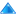

Topology Table
If your devices are configured with SNMP location information according to NeDi's scheme, you can drill down into your network in a tabular fashion here.
Those buttons on the top right help navigating and reveal more information:
- Click  to get to the top, to region,
 to city, or
to city, or  to building level.
to building level.
 displays number of devices per location
displays number of devices per location
 adds node population per location
adds node population per location
 adds free access ports per location
adds free access ports per location
- Clicking on location names lists all its devices (the displayed width is set in User-Profile ).
- You can "paint" important buildings red(ish) with redbuild in nedi.conf.
- A street address can have several buildings, if bldsep is configured correctly. A digit showing the amount of sub-buildings is added, if there are more than one.
The next button cycles the display of your sites. The state is preserved within the session and is used in Monitoring-Health as well:
 Switches to small icons (good for displaying hundreds of sites)
Switches to small icons (good for displaying hundreds of sites)
 Shows NeDi maps (for a glance inside)
Shows NeDi maps (for a glance inside)
- Shows Openstreet maps (which are cached in topo/) or (uncached) Googlemaps, if enabled in User-Profile.
 Adds wheather information for cities, with that you know when it's down because of a thunderstorm.
Adds wheather information for cities, with that you know when it's down because of a thunderstorm.
 Reverts to the default icon display.
Reverts to the default icon display.
Building Level
Inside a building you get to see the devices on each floor and room. If you specified the rack and rack-unit, the room name becomes a link which takes you to the rackview.
- Clicking on a floor lists all matching devices.
 Toggles displaying non-SNMP devices.
Toggles displaying non-SNMP devices.
 Shows device panels instead of icons.
Shows device panels instead of icons.
- If photos or documents named Building-Floor-something (ignoring non-word characters) are found in topo/Region/City they're presented with an icon underneath the floor label. Clicking on them reveals the photo in a popup window or opens the file.
 NeDi Help
NeDi Help